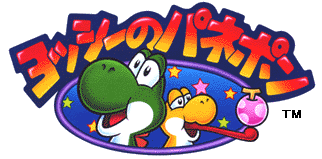

ヨッシーのパネポン
ジャンル：アクションパズル
希望小売価格：3,000 円（税別）
1996年10月26日発売
スーパーファミコンで好評の「パネルでポン」が、ゲームボーイで新登場。
同じマークのパネルを縦か横に３つ並べるとポンと消える、
楽しいアクションパズルゲームです。
こんなに単純なルールなのに、連鎖ができるともうやめられないっっっ!!
あの連鎖の快感もゲームボーイで健在です。
しかもおもしろさそのままに、今度はヨッシー達が大活躍。
大魔王クッパに悪い魔法をかけられた仲間達をたすけるために、
ヨッシーは立ち上がるのでした。